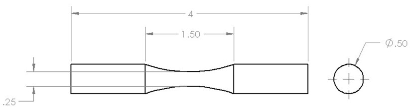
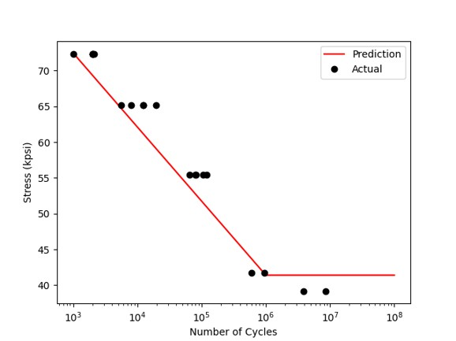

Fatigue Life Experiment
Rotating bending fatigue testing of 1020 HR steel specimens to reconstruct an S-N curve and validate predicted fatigue life against experimental results.

Fig. 1 — SolidWorks fatigue simulation showing stress distribution on the 1020 HR steel dogbone specimen (Ø0.25 in. neck, 4 in. total length).

Fig. 2 — Engineering drawing of the dogbone specimen: 4 in. total length, 1.50 in. gauge section, Ø0.50 in. grip / Ø0.25 in. neck.

Fig. 3 — Loading diagram illustrating the applied moment arm and weight used to generate fully reversed cyclic bending stress.
Objectives
- Accurately predict the fatigue life of 1020 HR steel specimens across a range of stress amplitudes between 1,000 and 1,000,000 cycles.
- Reconstruct an experimental S-N curve using rotating bending fatigue tests under fully reversed cyclic loading, and compare results against analytical predictions from Shigley's.
Outcomes & Contributions
- Experimental data closely tracked the shape of the theoretical S-N curve, with analytical predictions consistently underestimating actual cycles to failure.
- Determined that 1020 HR steel exhibits an infinite life threshold near 5 million cycles — higher than the standard 1 million cycle assumption.
- Modeled the specimen geometry in SolidWorks and ran static and fatigue FEA simulations to validate stress concentrations at the reduced-diameter neck.
Technical Details
- Dogbone specimens (Ø0.50 in. grip, Ø0.25 in. neck, 4 in. total) tested on a rotating bending fatigue machine at varied weight loads to produce different stress amplitudes.
- Applied moment calculated from weight and arm length; stress amplitude derived analytically using flexural stress equations and Marin correction factors.
- SolidWorks Simulation used for FEA static and fatigue analysis; Intel Direct Sparse Solver run across 12,624 nodes and 8,015 elements.
- Results plotted on a log-log S-N diagram and compared against Shigley's Figure 6-17(c) reference curve for 1020 HR steel.